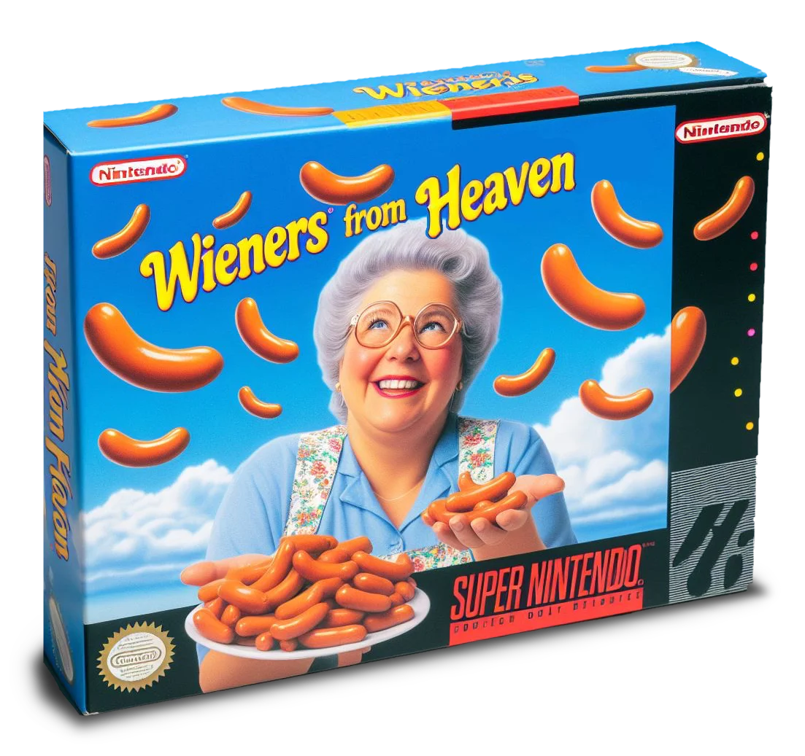
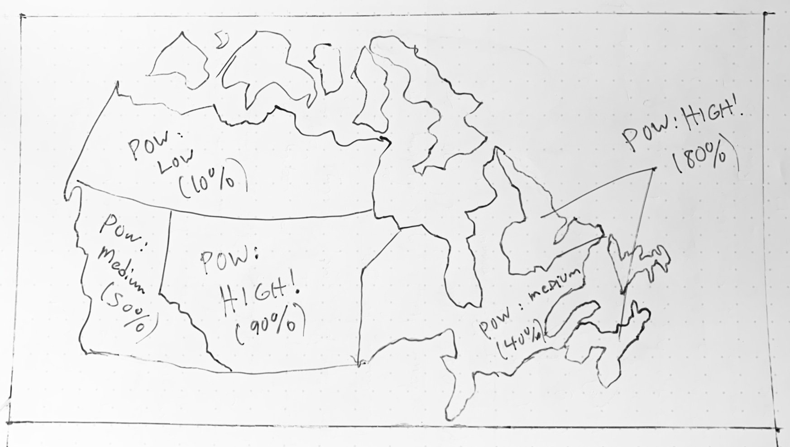
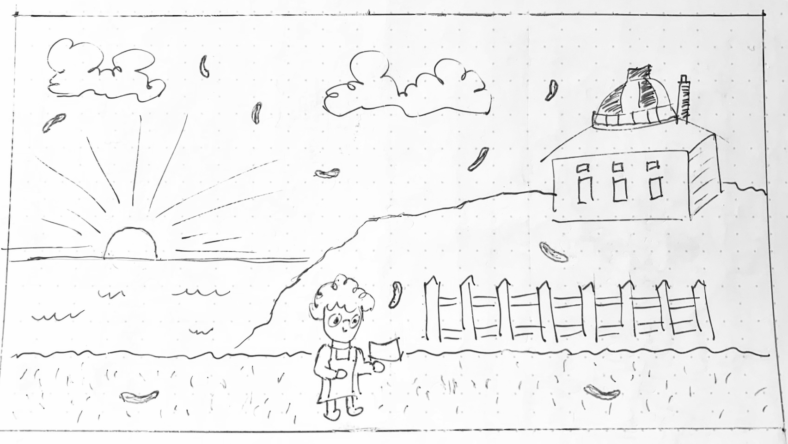

Wieners from Heaven: 🇨🇦
Maple Syrup Edition Game Design Document

Overview
Working Title
Wieners from Heaven: Maple Syrup Edition
Concept Statement
This game is a side-scrolling platforming game. It is a 16-bit
SNES-style demaster of the full version of the "Wieners from Heaven"
3D video game (TBA). The purpose of this project is to evaluate scope
required to create the full-length game and to gauge interest from the
gaming community by submitting to an itch.io game jam.
Genre
Sidescroller / Action / Minigame
Target Audience
Everyone who is, or has, or once had a grandmother
Consumers of processed, tubular meat products
Casual gamers, Twitch streamers
Unique Selling Points
There are wieners!
Play a video game as an elderly person!
It's weird!
Product Design
Player Experience
The player plays the role of "Nan", a 76-year-old grandmother. The
main gameplay consists of navigating the character through
side-scrolling outdoor scenes while attempting to catch wieners that
are falling from the sky. Points are awarded for every collectible,
with the opportunity for bonus points if certain tasks are completed
successfully.
Nan has limited stamina, and can only jump a limited number of times
before she has to wait for stamina to recharge. This adds a strategic
challenge to level completion. She is able to consume wieners to
recharge stamina more rapidly, but this reduces her hit point count
and her cumulative point score for the level.
Visual and Audio Style
The game world is a bright cartoonish side-scrolling adventure in a
16-bit pixel-art style. There are five levels, corresponding to the
five regions of Canada (Atlantic, Central, The Prairies, West Coast,
Northern Territories). Each level/region will feature landscape and
architectural features unique to that region.
Audio will be inspired by 8-bit and 16-bit era home console sound
effects and music.
Game World Fiction
The player starts the game as an elderly grandmother, referred to as
Nan. Her grandchildren are coming to visit but she doesn't have any
food that they will eat. Without time to get to the grocery store, she
prays for some kind of miracle. Suddenly wieners begin falling from
the sky so she hurries outside to gather as many as she can. She gets
a little carried away, and before she knows it, she's somehow managed
to walk across Canada.
Monetization
It's a demo, no monetization plans
Platform, Technology and Scope
Platform
Web-based (mobile and desktop)
Technology
HTML5 (Canvas for gameplay, DOM for User Interface)
Developer has limited Javascript experience (ie: I have no idea what
I'm doing or how I'll complete this in time 😂 😭 🤪)
Game System Design
Core Loops
The core game loop is the player navigating a side-scrolling 2D scene,
attempting to collect wieners while avoiding hazards. There is an
increase in difficulty with level progression.
Objectives and Progression
The game starts with a tutorial level in Nan's backyard to learn basic
controls. It then leads into Level 1: Atlantic where Nan walks along
the roadside catching wieners as they fall. The game ends with Nan
making it through the Northern Territories (Level 5, most challenging)
Game System
Internal systems to be created include collision detection, sprite
animation, parallax scrolling, state machines, object spawning,
score-keeping and other game-related functions and/or classes.
External systems accessed are a weather API (TBD) and leaderboard
(potentially). The weather API call fetches latest Probability of
Precipitation values for each of the five areas (Atlantic, Central,
The Prairies,West Coast, Northern Territories). This value is used to
calculate the POW (Probability of Wieners) value for each level.
Players are encouraged to play on days when the weather across Canada
is rainy to increase chances of collecting wieners and increasing
their score.
Interactivity
Before gameplay during game selection, player is presented with a map
of Canada showing POW 'forecast' values for the different regions.
Player can then decide to play an individual level or as a progression
through the levels in order.

Sketch: Level Select Screen showing map regions and POW values
Controls are touchscreen and mobile compatible, but offer more
accuracy and enjoyment with keyboard or controller. During gameplay
the player has to try to catch the collectibles, avoiding obstacles
and threats, while considering the player's stamina and health. Quick
decisions must be made about sacrificing collected points for stamina
and/or health.

Sketch: Gameplay for sidescrolling level
Game ends when player runs out of lives, or makes it to the end of
level 5 (Northern Territories)